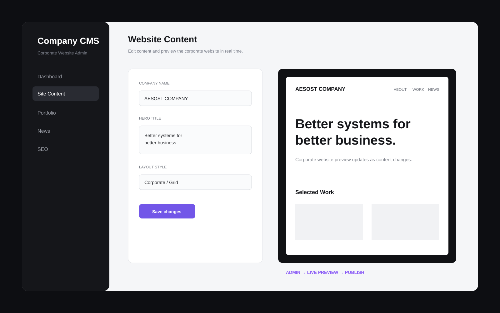
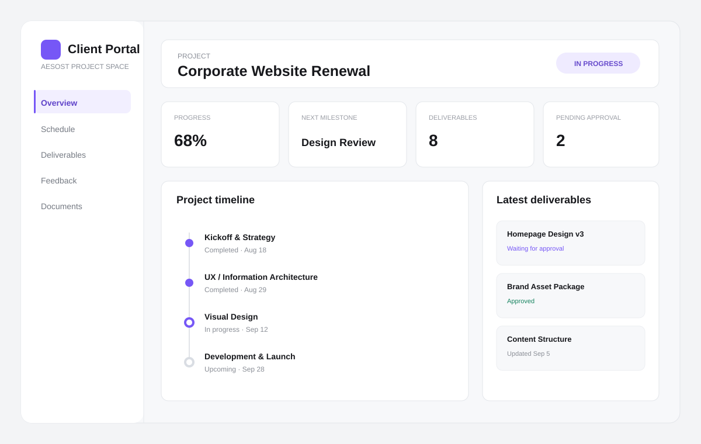
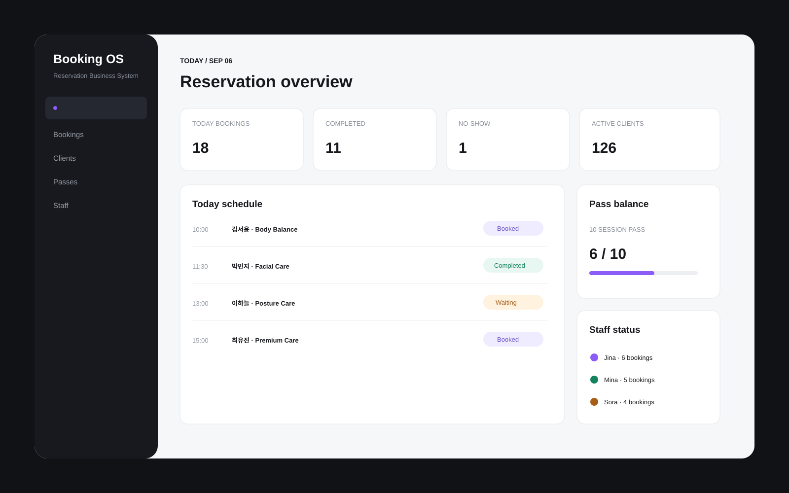
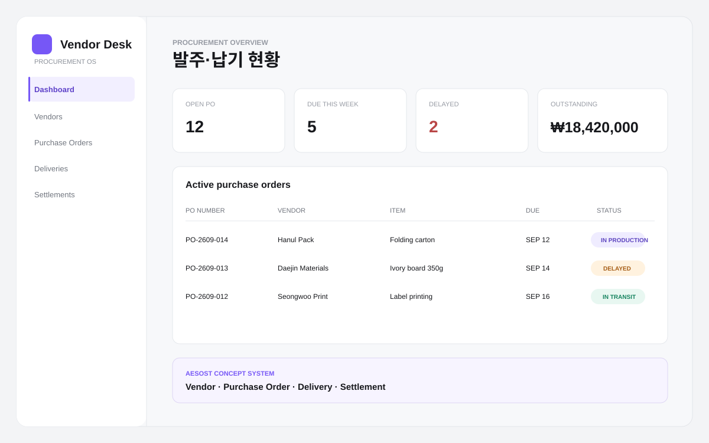
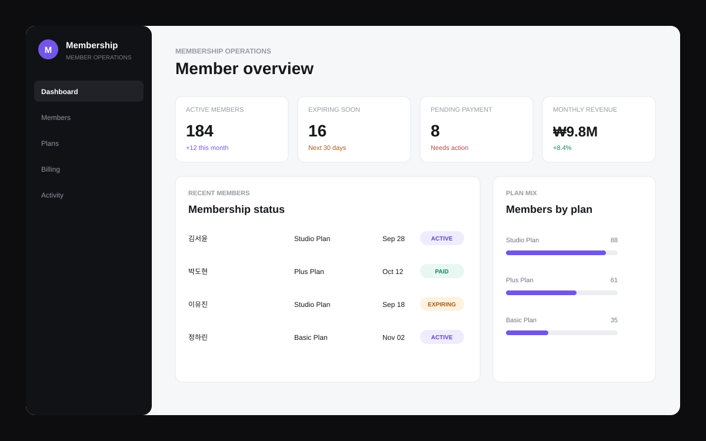
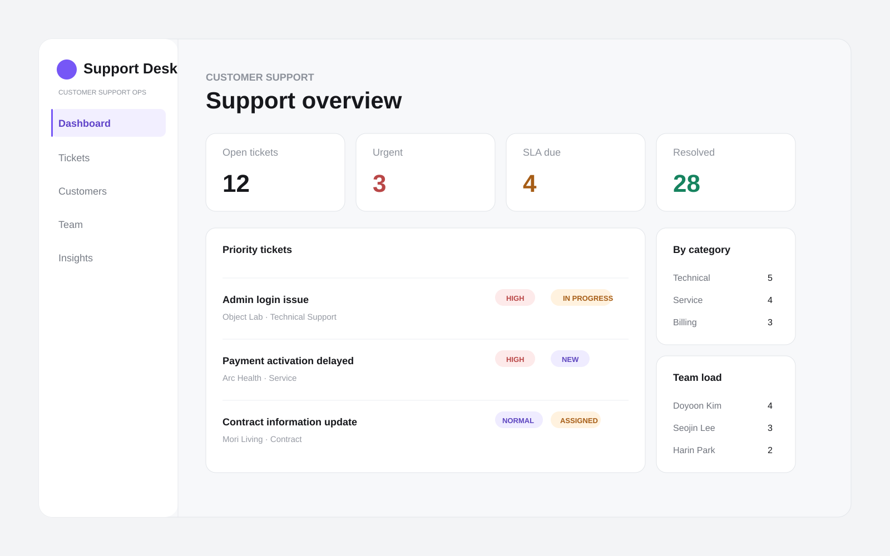

LIVE UI / 01
LIVE UI / 01
01 / INDEPENDENT BUSINESSLIVE
1인사업자를 위한 관리 시스템
SoloDesk고객, 프로젝트, 일정, 견적과 정산을 한 곳에서 관리합니다.
AESOST SYSTEM SOLUTIONS
현재 10개의 대표 시스템을 실제 예시 화면과 함께 정리했습니다. 어떤 시스템인지 먼저 보고, 각 카드에서 상세 설명과 인터랙티브 데모로 이어서 확인할 수 있습니다.
SOLUTION INDEX
정해진 제품을 그대로 판매하는 구조가 아닙니다. 아래 시스템은 구축 가능한 범위를 보여주는 기준이며, 실제 개발 시에는 각 기업·브랜드의 업무 방식과 목적에 맞춰 기능, 디자인, 레이아웃과 데이터 구조를 다시 설계합니다.
LIVE UI / 01
고객, 프로젝트, 일정, 견적과 정산을 한 곳에서 관리합니다.
 LIVE UI / 02
LIVE UI / 02
기업 문의를 신규, 상담, 견적, 협의와 계약 단계로 관리합니다.

LIVE UI / 03회사소개, 사업영역, 포트폴리오, 뉴스와 SEO를 직접 관리합니다.

LIVE UI / 04계약, 일정, 산출물, 파일, 피드백과 승인 요청을 고객과 공유합니다.

LIVE UI / 05
LIVE UI / 06
LIVE UI / 07회원 DB, 플랜, 결제, 혜택, 만료와 갱신 상태를 관리합니다.

LIVE UI / 08문의 티켓, 담당자, 우선순위, SLA와 해결 이력을 관리합니다.
 LIVE UI / 09
LIVE UI / 09
업무, 일정, 담당자, 산출물, 피드백과 승인 상태를 관리합니다.
 LIVE UI / 10
LIVE UI / 10
견적 항목, VAT, 버전, 발송, 열람과 승인 상태를 관리합니다.
CUSTOM DEVELOPMENT
사용 인원, 권한 체계, 기존 업무 방식, 브랜드 디자인, 필요한 데이터와 외부 서비스 연동에 따라 기능과 화면 구성을 다시 설계합니다. 데모는 시작점이고 실제 결과물은 각 기업에 맞는 별도의 시스템입니다.